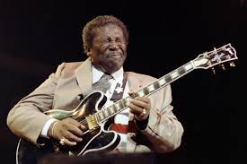
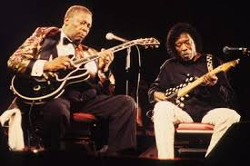
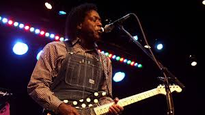
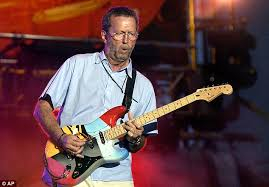
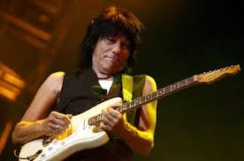
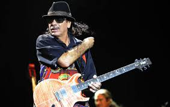
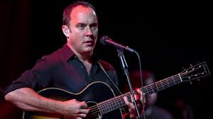
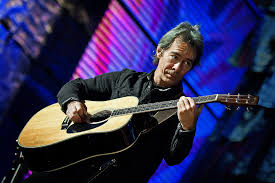
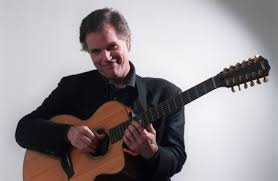

My Concert History
I am an avid fan of all things guitar, and also of many styles of music in general. Over the years I have been to many great concerts. Some of them in giant amphitheaters/arenas and others in smaller venues. Whether the artist had amazing virtuosity, or just some unique sound that no one else comes close to, these shows all left me wanting more. Here are some of the great artists I have seen in my life.
The Blues Gods
  BB King and Buddy Guy influenced almost every guitar player that came after them. BB died last year at almost 90 years old, and the music world was quick to voice their appreciation for his contributions to the history of guitar playing and music in general. Buddy Guy just celebrated his 80th birthday and still has more energy than most people 50 years his junior. He is the last living Mississippi blues legend, and he is still one of the best guitar players around. He was kind of like Jimi Hendrix, 10 years before Hendrix. I am privileged to have seen both of them 3 times.
60's Legends
  Eric Clapton, Jeff Beck, and Carlos Santana all grew up idolizing BB King and Buddy Guy. They all got to play with Jimi Hendrix. Jimi Hendrix considered Eric Clapton his favorite guitarist. Eddie Van Halen said Clapton was his biggest influence. The Gibson Les Paul guitar was discontinued and out of production until Clapton started playing one in the mid-sixties. It has since become one of the most iconic guitars of the last fifty years. The Eric Clapton concert I attended in 2001 was the best show I ever saw. His playing was fluid and wonderful on every song. His whole band was made up of seasoned masters and they were on fire the whole night.
Carlos Santana became huge after blowing away the crowd at Woodstock 69'. Santana's first three albums went number one and he has continued to be a groundbreaking player ever since. Everything about his playing is completely unique to him. He sounds like nobody else. His band is bigger than most rock bands, has a lot of percussion, and produces a groove like no other band I have ever seen. I have never seen more people who obviously aren't dancers getting down like they have no control over themselves than I saw at that Santana show.
Jeff Beck is probably the most unique guitar player alive. He uses the volume knob, tone knobs, and whammy bar on his guitar all at once to make it sound like a host of other instruments. He plays instrumentals that are everything from the hardest rock to classical, jazz, blues, fusion, rockabilly, funk, r&b, electronic, modern and any other style you can name. I saw him play shortly after BB King died, and he played a version of "The Thrill is Gone" that only he could have played as tribute to his idol. Watching him do his thing was definitely among the most impressive displays of talent I have ever seen.
Acoustic Shows
  Dave Matthews became hugely famous during my formative years. For a few years in the 90's, his music was all over TV and radio. I saw The Dave Matthews Band in an outdoor amphitheatre while I was in college. The original lineup of his band was still intact, and they were phenomenal. Dave is not a virtuosic player who can dazzle you with technical prowess, but he is a very good rhythmic/melodic player with his own chord fingerings that make his playing unique. I was pleasantly surprised at how good him and his band were.
Tim Reynolds is best known for his performances with Dave Matthews. He is an absolute master of the instrument. He can fingerpick like a flamenco player, or play with a pick with great speed and precision. His fingers are incredibly strong and he bends the strings like they are as flimsy as rubberbands. I saw him play alone in a theater with a looper. A looper is a machine that records a short bit of music, and then plays it over and over again. It allows the player to record multiple lines of music and layer them together to sound like many players are playing at the same time. I had no idea what to expect seeing him alone without Dave Matthews. I was in awe of his abilities and the great music he produced that night.
Leo Kottke is one of the great legends in the history of the guitar. He has the unique ability to play two separate musical lines at the same time on a guitar. This is much harder to do on a guitar as opposed to a piano, because you are only pushing the notes down with one hand. In addition to this ability, he also has an encyclopedic knowledge of chords and uses different string tunings on almost every song. He can play with a slide as good as anyone, and also incorporates a lot of string bending into his unique musical phrasing. I saw Leo in a small club venue, and I couldn't take my eyes off of his hands doing their thing that night.
Local Favorites
The Urge are probably the most popular band from St. Louis. I have seen the Urge 7 or 8 times, and every time the local crowd is just as pumped to see them as they were in the 90's when they initially became famous. Their album "Receiving the Gift of Flavor" was one of those albums that is great from the first track to the last. They usually play almost every song from that album, and the crowd sings every word.
Lately I have gotten to really like a local "Grateful Dead" cover band called "The 710 Band". They are middle aged guys who have been playing together for over 30 years, and they play bars around town. The vocals, rhythm playing, and solos are always great. They play "Grateful Dead" songs with a more thumping, pulsating groove than most Dead bands, and I actually prefer their versions of some of the songs to the Dead's. They have a pretty regular following, and when they play "Sugaree" or "Shakedown Street", the crowd really gets into it. The also throw in some Bob Dylan and Credence Clearwater Revival songs, but play them in the same wonderful groove as the Dead songs. Do yourself a favor and check them out, even if you're not familiar with the Dead.